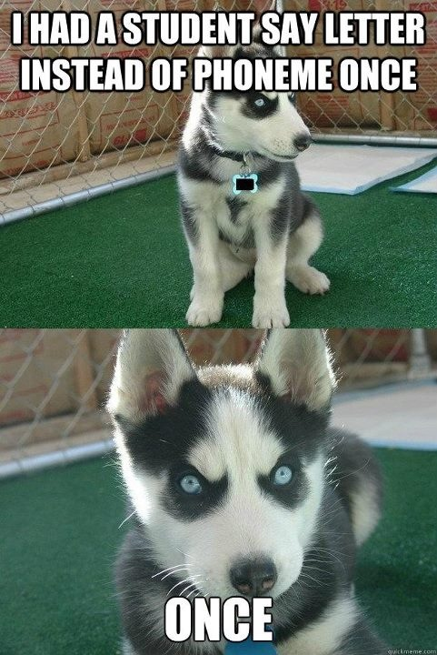
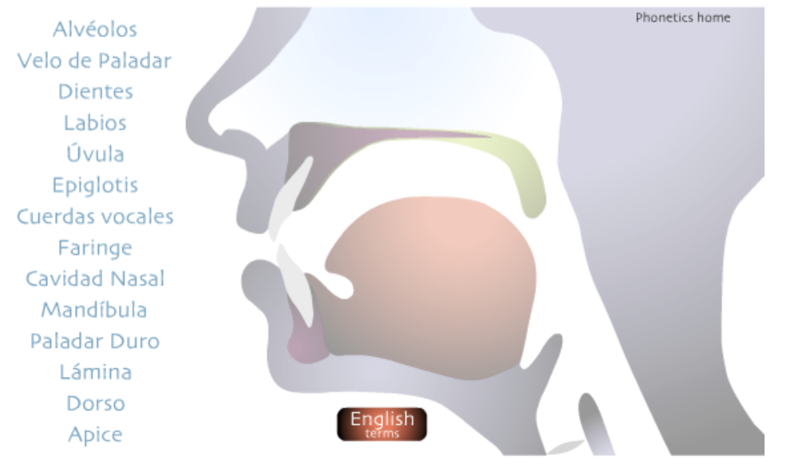
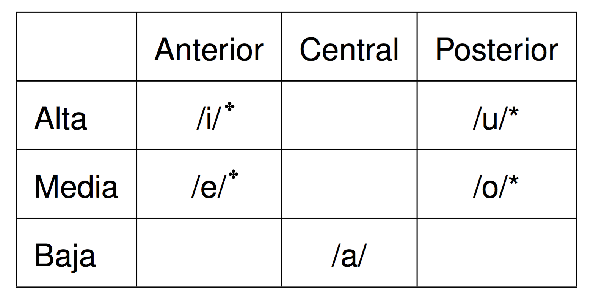
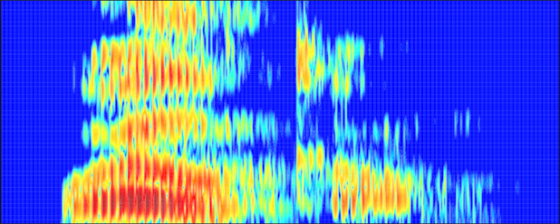
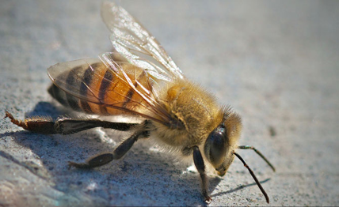
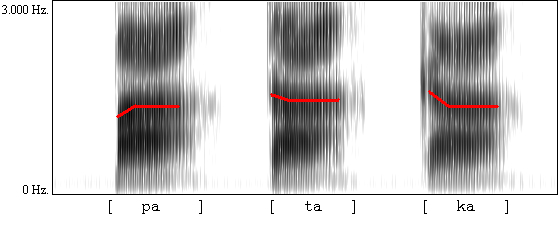
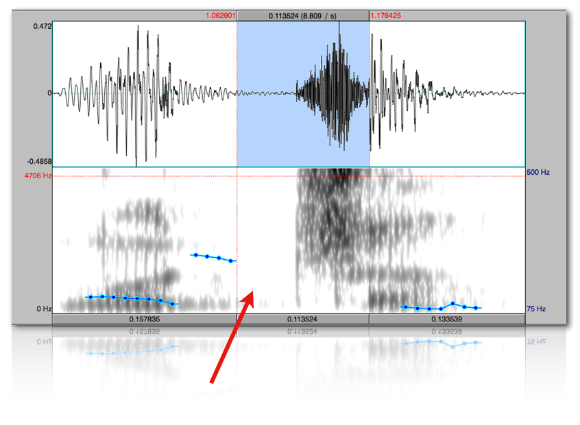
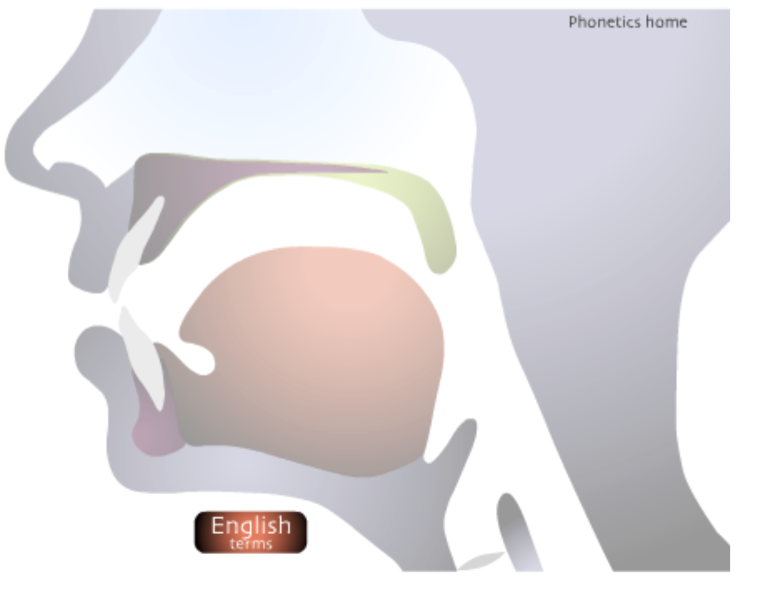
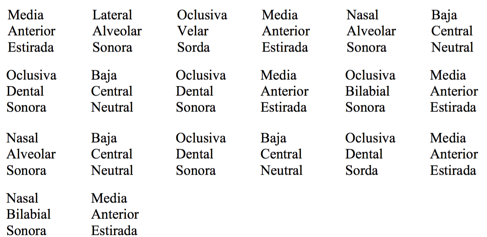
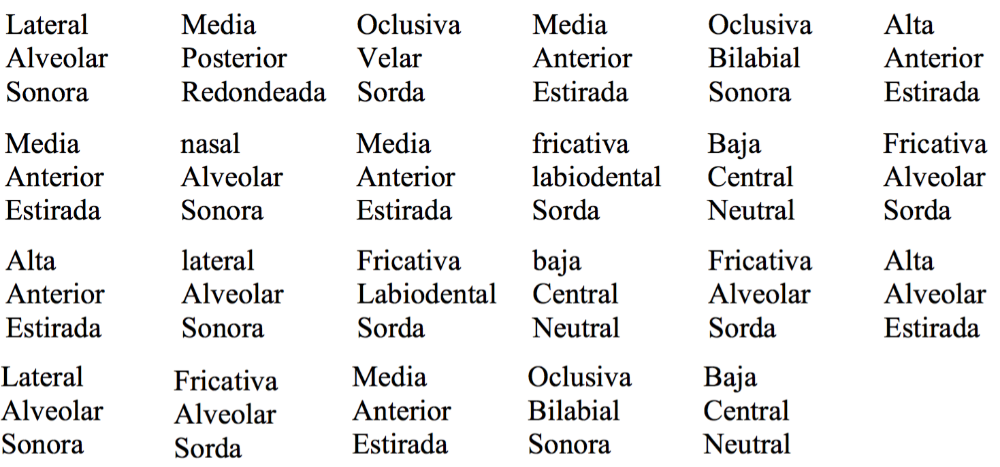

Fonética y español oral
Fonética articulatoria - las consonantes
Joseph V. Casillas
Instituto Franklin: otoño 2015
Repaso

Recordad...
Grafema/dígrafo (letras): Entre comillas
- "a"
- "ch"
- "ll"
Fonema (sonidos): Entre barras
- /a/
- /ʧ/
- /ʝ/
El aparato fonador
El aparato fonador

- Aparato fonador: las partes del cuerpo humano donde producimos los sonidos
El aparato fonador
| Articuladores pasivos | Articuladores activos | |
|---|---|---|
| Dientes | Labios: se abren/cierran/redondean | |
| Zonja alveolar | Lengua: se retrae/adelanta/baja/sube | |
| Zona palatal | Mandíbula inferior: se abre | |
| Úvula: se extiende hacia atrás o se baja |
- ¿Lo puedo mover?
- Sí. Es un articulador activo.
- No. Es un articulador pasivo.
¿En qué se diferencian?
- Las vocales: ningún obstáculo a la salida del aire
- Las consonantes: algún tipo de obstáculo a la salida del aire
Los fonemas vocálicos
Las vocales
Las vocales monoptongales /a, e, i, o, u/:
Clasificación:
- Posición de la lengua en dos ejes
- horizontal
- vertical
- El redondeamiento de los labios
Las vocales

✤

Los fonemas consonánticos
Descripción articulatoria

Utilizamos 3 parámetros para la descripción de las consonantes
- La sonoridad
- El modo de articulación
- El punto de articulación

1. La sonoridad
La sonoridad
Todos los sonidos de todos los idiomas pertenecen a uno de estos dos grandes grupos:
- SONOROS: vibran las cuerdas vocales [+son]
- SORDOS: no vibran las cuerdas vocales [-son]
La sonoridad

Una prueba para comprobar la sonoridad de un sonido dado...
- Las vibraciones de las cuerdas vocales se pueden notar tocándose la garganta
- ssssss (sordo)
- zzzzzz (sonoro)
La sonoridad
La sonoridad
¿Cuáles son los sonidos sordos y sonoros?
/p, t, d, k, s, f, θ, g, b, n, m, ʝ, x, r, ɾ, w, l, ʧ, ɲ, a, e, i, o, u, i̯, u̯/
| Sordos | Sonoros | |
|---|---|---|
| _ _ _ | _ _ _ | |
| _ | _ _ _ | |
| _ | _ _ _ _ _ _ _ | |
| _ _ | _ _ | |
| _ | _ _ _ |
La sonoridad
¿Cuáles son los sonidos sordos y sonoros?
/p, t, d, k, s, f, θ, g, b, n, m, ʝ, x, r, ɾ, w, l, ʧ, ɲ, a, e, i, o, u, i̯, u̯/
| Sordos | Sonoros | |
|---|---|---|
| /p/ /t/ /k/ | / |
|
| /s/ | / |
|
| /ʧ/ | / |
|
| /f/ /θ/ | / |
|
| /x/ | / |
2. El modo de articulación
El modo
- Oclusivo
- Fricativo
- Africado
- Nasal
- Líquido
1. Modo oclusivo
Dos características...
- Obstáculo total
- Explosión
1. Modo oclusivo
¿Cuáles son los fonemas correspondientes?
- Las consonantes oclusivas sordas
- Las consonantes oclusivas sonoras
1. Modo oclusivo
¿Cuáles son los fonemas correspondientes?
- Las consonantes oclusivas sordas /p, t, k/
- Las consonantes oclusivas sonoras /
b ,d ,g /
1. Modo oclusivo

2. Modo fricativo
Obstáculo parcial
- un estrechamiento de los órganos articulatorios sin que éstos lleguen a juntarse → fricción
¿Cuáles son los fonemas correspondientes?
- Las consonantes fricativas sordas
- Las consonantes fricativas sonoras
2. Modo fricativo
Obstáculo parcial
- un estrechamiento de los órganos articulatorios sin que éstos lleguen a juntarse → fricción
¿Cuáles son los fonemas correspondientes?
- Las consonantes fricativas sordas /f, θ, s, x/
- Las consonante fricativa sonora /
ʝ /
3. Modo africado
Obstáculo total + obstáculo parcial
- Cierre completo de dos órganos articulatorios seguido por una fricción
¿Cuáles son los fonemas correspondientes?
- Las consonantes fricativas sordas
- Las consonantes fricativas sonoras
3. Modo africado
Obstáculo total + obstáculo parcial
- Cierre completo de dos órganos articulatorios seguido por una fricción
¿Cuáles son los fonemas correspondientes?
- La consonante africada sorda /
ʧ /
3. Modo africado

4. Modo nasal
Uso de la cavidad nasal
- La cavidad oral está cerrada y el pasaje nasal abierto
- La úvula baja y permite que el aire pase a la cavidad nasal
¿Cuáles son los fonemas correspondientes?
- Las consonantes nasales son sonoras
4. Modo nasal
Uso de la cavidad nasal
- La cavidad oral está cerrada y el pasaje nasal abierto
- La úvula baja y permite que el aire pase a la cavidad nasal
¿Cuáles son los fonemas correspondientes?
- Las consonantes nasales son sonoras /m, n, ɲ/
5. Modo líquido
2 categorías:
- Lateral:
- se produce un bloqueo y el aire escapa lateralmente por los costados de la lengua - /
l /
5. Modo líquido
2 categorías:
- Lateral
- Vibrante:
Simple : el ápice toca los alvéolos una sola vez - /ɾ /Múltiple : el ápice toca los alvéolos varias veces - /r /
A practicar...
Identifica el modo de las siguientes consonantes y explica cómo se producen:
| Fonema | Modo | |
|---|---|---|
| /s/ | - | |
| /m/ | - | |
| /p/ | - | |
| /ʧ/ | - | |
| /l/ | - | |
| /r/ | - | |
| /θ/ | - | |
| /ɲ/ | - | |
| /ʝ/ | - |
A practicar...
Identifica el modo de las siguientes consonantes y explica cómo se producen:
| Fonema | Modo | |
|---|---|---|
| /s/ | fricativo | |
| /m/ | nasal | |
| /p/ | oclusivo | |
| /ʧ/ | africado | |
| /l/ | lateral | |
| /r/ | vibrante | |
| /θ/ | fricativo | |
| /ɲ/ | nasal | |
| /ʝ/ | fricativo |
El punto de articulación
El punto de articulación
- El punto de articulación describe el lugar donde se produce el contacto entre los articuladores.
- Los fonemas consonánticos del español se producen en los siguientes lugares:
| Punto | Articulador |
|---|---|
| Bilabial | Los dos labios |
| Labiodental | Labio inferior y dientes superiores |
| Interdental | Ápice y dientes inferiores/superiores |
| Dental | Ápice y dientes superiores |
| Alveolar | Ápice y alvéolos |
| Alveopalatal | Predorso y la zona postalveolar |
| Palatal | Dorso de la lengua y paladar |
| Velar | Dorso de la lengua y velo del paladar |
El punto de articulación

- Bilabial
- Labiodental
- Interdental
- Dental
- Alveolar
- Alveopalatal
- Palatal
- Velar
A practicar...
Los puntos de articulación
| Punto | Articulador | Fonema |
|---|---|---|
| Bilabial | Los dos labios | _ _ _ |
| Labiodental | Labio inferior y dientes superiores | _ |
| Interdental | Ápice y dientes inferiores/superiores | _ |
| Dental | Ápice y dientes superiores | _ _ |
| Alveolar | Ápice y alvéolos | _ _ _ _ _ |
| Alveopalatal | Predorso y la zona postalveolar | _ |
| Palatal | Dorso de la lengua y paladar | _ _ |
| Velar | Dorso de la lengua y velo del paladar | _ _ _ |
A practicar...
Los puntos de articulación
| Punto | Articulador | Fonema |
|---|---|---|
| Bilabial | Los dos labios | /p, b, m/ |
| Labiodental | Labio inferior y dientes superiores | /f/ |
| Interdental | Ápice y dientes inferiores/superiores | /θ/ |
| Dental | Ápice y dientes superiores | /d, t/ |
| Alveolar | Ápice y alvéolos | /s, l, n, r, ɾ/ |
| Alveopalatal | Predorso y la zona postalveolar | /ʧ/ |
| Palatal | Dorso de la lengua y paladar | /ɲ, ʝ/ |
| Velar | Dorso de la lengua y velo del paladar | /k, g, x/ |
Repaso
Descripción articulatoria
- En vuestras propias palabras definid los siguientes términos.
- La sonoridad
- El modo de articulación
- El punto de articulación
- ¿Cómo se sabe si un sonido es sordo o sonoro?
- ¿Cuáles son los modos de articulación? Dad detalles de cada uno.
- ¿Cuántos puntos de articulación hay en español? ¿Qué diferencias hay según la variedad?
Más descripción articulatoria
Describid los siguientes sonidos según su modo, punto y sonoridad...
| Fonema | Descripción articulatoria |
|---|---|
| /a/ | |
| /f/ | |
| /θ/ | |
| /d/ | |
| /i/ | |
| /ɲ/ | |
| /ʝ/ | |
| /l/ | |
| /o/ | |
| /w/ | |
| /ɾ/ |
Describid los siguientes sonidos según su modo, punto y sonoridad...
| Fonema | Descripción articulatoria |
|---|---|
| /a/ | baja, central |
| /f/ | fricativa, labiodental, sorda |
| /θ/ | fricativa, interdental, sorda |
| /d/ | oclusiva, dental, sonora |
| /i/ | alta, anterior, estirada |
| /ɲ/ | nasal, palatal, sonora |
| /ʝ/ | fricativa, palatal, sonora |
| /l/ | lateral, alveolar, sonora |
| /o/ | media, posterior, redondeada |
| /w/ | fricativa, labio-velar, sonora |
| /ɾ/ | vibrante simple, alveolar, sonora |
Identificad los siguientes sonidos de acuerdo a su modo, punto y sonoridad...
| Descripción articulatoria | Fonema |
|---|---|
| media, anterior, estirada | |
| oclusiva, bilabial, sorda | |
| nasal, bilabial, sonora | |
| vibrante multiple, alveolar, sonora | |
| africada, alveopalatal, sorda | |
| fricativa, velar, sorda | |
| lateral, palatal, sonora | |
| oclusiva, dental, sorda | |
| nasal, alveolar, sonora | |
| fricativa, alveolar, sorda | |
| alta, posterior, redondeada |
Identificad los siguientes sonidos de acuerdo a su modo, punto y sonoridad...
| Descripción articulatoria | Fonema |
|---|---|
| media, anterior, estirada | /e/ |
| oclusiva, bilabial, sorda | /p/ |
| nasal, bilabial, sonora | /m/ |
| vibrante multiple, alveolar, sonora | /r/ |
| africada, alveopalatal, sorda | /ʧ/ |
| fricativa, velar, sorda | /x/ |
| lateral, palatal, sonora | /ʎ/ |
| oclusiva, dental, sorda | /t/ |
| nasal, alveolar, sonora | /n/ |
| fricativa, alveolar, sorda | /s/ |
| alta, posterior, redondeada | /u/ |


- /el.ke.ˈna.da.ˈde.be.ˈna.da.ˈte.me/
- "El que nada debe, nada teme"

- /lo.ke.ˈbi̯e.ne.ˈfa.sil.ˈfa.sil.se.ˈba/
- "Lo que viene fácil, fácil se va"
Más transcripciones
Unos ejemplos...
- Juan y Ernesto insisten mucho.
- Pedro hizo dos viajes a Indio, California.
- Nadie sabía si Marta tenía cáncer.
- Este señor es un amigo mío.
Repaso
Hemos visto...
- Fonética articulatoria
- las vocales
- las consonantes
- Las vocales se describen según...
- su posicionamiento en dos ejes
- el estado de los labios
- Las consonantes se describen según...
- el modo de articulación
- el punto de articulación
- la sonoridad